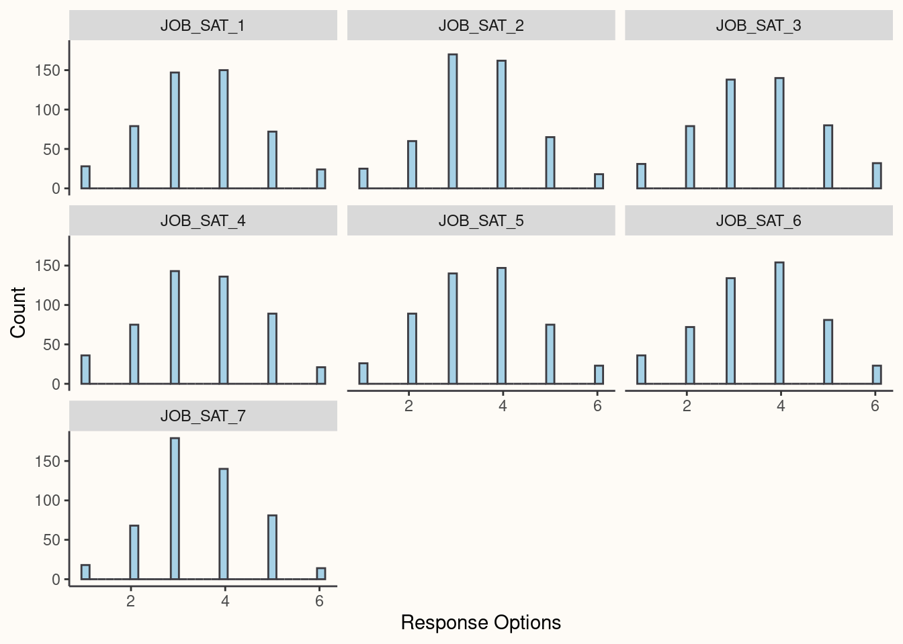

library(tidyr)
library(dplyr)
library(tibble)
library(ggplot2)
library(psych)
library(readr)
library(Hmisc)
library(lavaan)Lecture 2: Survey Development Exercises
Load necessary libraries
Read in Lecture 2 data
To explore the data, you first need to read it from the class website:
data_url <- "https://alopilato88.github.io/psychometrics/materials/data/lecture-2-exercise.csv"
scale_data <- readr::read_csv(data_url)I have created a data frame object called scale_data which contains the survey data.
readr::read_csv() is an R function, exported from the readr package, that allows you to load .csv files into R.
Glimpse the Data
Before analyzing your data, you will always want to look at it to ensure it loaded correctly.
head(scale_data)# A tibble: 6 × 19
RESPONDENT_ID JOB_SA…¹ JOB_S…² JOB_S…³ JOB_S…⁴ JOB_S…⁵ JOB_S…⁶ JOB_S…⁷ AFFEC…⁸
<dbl> <dbl> <dbl> <dbl> <dbl> <dbl> <dbl> <dbl> <dbl>
1 1 5 5 5 5 6 4 3 7
2 2 3 3 3 3 2 4 4 6
3 3 4 5 4 5 4 4 4 5
4 4 4 4 5 5 4 1 2 3
5 5 4 4 6 3 4 4 5 4
6 6 4 3 4 4 4 1 1 4
# … with 10 more variables: AFFECTIVE_COMMITMENT_2 <dbl>,
# AFFECTIVE_COMMITMENT_3 <dbl>, AFFECTIVE_COMMITMENT_4 <dbl>,
# AFFECTIVE_COMMITMENT_5 <dbl>, TURNOVER_INTENT_1 <dbl>,
# TURNOVER_INTENT_2 <dbl>, TURNOVER_INTENT_3 <dbl>, TURNOVER_INTENT_4 <dbl>,
# TURNOVER_INTENT_5 <dbl>, TURNOVER_INTENT_6 <dbl>, and abbreviated variable
# names ¹JOB_SAT_1, ²JOB_SAT_2, ³JOB_SAT_3, ⁴JOB_SAT_4, ⁵JOB_SAT_5,
# ⁶JOB_SAT_6, ⁷JOB_SAT_7, ⁸AFFECTIVE_COMMITMENT_1
# ℹ Use `colnames()` to see all variable namesYou can also use names() to retrieve the column names of your data frame.
names(scale_data) [1] "RESPONDENT_ID" "JOB_SAT_1" "JOB_SAT_2"
[4] "JOB_SAT_3" "JOB_SAT_4" "JOB_SAT_5"
[7] "JOB_SAT_6" "JOB_SAT_7" "AFFECTIVE_COMMITMENT_1"
[10] "AFFECTIVE_COMMITMENT_2" "AFFECTIVE_COMMITMENT_3" "AFFECTIVE_COMMITMENT_4"
[13] "AFFECTIVE_COMMITMENT_5" "TURNOVER_INTENT_1" "TURNOVER_INTENT_2"
[16] "TURNOVER_INTENT_3" "TURNOVER_INTENT_4" "TURNOVER_INTENT_5"
[19] "TURNOVER_INTENT_6" The first column RESPONDENT_ID contains a unique identification number for each respondent. The remaining columns follow the same naming convention: CONSTRUCT_ITEM. In our data frame, we see that there are three scales measuring JOB_SAT (job satisfaction), AFFECTIVE_COMMITMENT (affective dimension of organizational commitment), and TURNOVER_INTENT (turnover intetions). The scales contain 7, 5, and 6 items, respectively.
You can also use the View function to open up a separate window in RStudio to manually explore your data. I do not recommend using View if you have a very large data frame loaded.
Always plot your data first
Before analyzing your data, it is always wise to first explore it graphically with a variety of plots. The package ggplot2 gives us access to a variety of functions to plot our data and customize the plots.
Below you will find code to explore the response distributions of the JOB_SAT item responses found in the scale_data data frame.
# Look at the response distributions for JOB_SAT items
# First we have to format the scale_data
job_sat_plot_data <-
scale_data |>
dplyr::select(
RESPONDENT_ID,
dplyr::contains("JOB_SAT")
) |>
tidyr::pivot_longer(
cols = dplyr::contains("JOB_SAT"),
names_to = "ITEM_ID",
values_to = "ITEM_RESPONSE"
)
# Now we can use ggplot() to plot the data
ggplot2::ggplot(
data = job_sat_plot_data,
ggplot2::aes(
x = ITEM_RESPONSE
)
) +
ggplot2::facet_wrap(~ ITEM_ID) +
ggplot2::geom_histogram(
fill = "#A6D1E6",
color = "#3D3C42"
) +
ggplot2::theme(
plot.background = element_rect(fill = "#FEFBF6", colour = "#FEFBF6"),
panel.background = element_rect(fill = "#FEFBF6"),
axis.line.x = element_line(colour = "#3D3C42"),
axis.line.y = element_line(colour = "#3D3C42"),
panel.grid.minor = element_line(colour = "#FEFBF6"),
panel.grid.major = element_line(colour = "#FEFBF6")
) +
ggplot2::labs(
x = "Response Options",
y = "Count"
)
Try making your own plot
Try to recreate the above, but use AFFECTIVE_COMMITMENT or TURNOVER_INTENT.
Explore the Item Descriptives
The package psych contains many useful functions for scale development, one of which is describe(). As you can see below, this function outputs many of the necessary descriptive statistics needed for scale development.
scale_data |>
dplyr::select(
dplyr::contains("JOB_SAT")
) |>
psych::describe() vars n mean sd median trimmed mad min max range skew kurtosis
JOB_SAT_1 1 500 3.46 1.22 3 3.46 1.48 1 6 5 0.00 -0.43
JOB_SAT_2 2 500 3.47 1.13 3 3.48 1.48 1 6 5 -0.06 -0.11
JOB_SAT_3 3 500 3.51 1.28 4 3.51 1.48 1 6 5 -0.01 -0.57
JOB_SAT_4 4 500 3.46 1.26 3 3.49 1.48 1 6 5 -0.09 -0.59
JOB_SAT_5 5 500 3.45 1.22 3 3.44 1.48 1 6 5 0.02 -0.53
JOB_SAT_6 6 500 3.48 1.25 4 3.51 1.48 1 6 5 -0.13 -0.50
JOB_SAT_7 7 500 3.48 1.11 3 3.48 1.48 1 6 5 0.02 -0.33
se
JOB_SAT_1 0.05
JOB_SAT_2 0.05
JOB_SAT_3 0.06
JOB_SAT_4 0.06
JOB_SAT_5 0.05
JOB_SAT_6 0.06
JOB_SAT_7 0.05We can also use the rcorr() function exported from the package Hmisc to explore the inter-correlations among the scale items. As you can see below, rcorr() provides the pearson correlations among the scale items as well as a p-value for each correlation.
scale_data |>
dplyr::select(
dplyr::contains("JOB_SAT")
) |>
as.matrix() |>
Hmisc::rcorr() JOB_SAT_1 JOB_SAT_2 JOB_SAT_3 JOB_SAT_4 JOB_SAT_5 JOB_SAT_6 JOB_SAT_7
JOB_SAT_1 1.00 0.58 0.58 0.50 0.60 -0.06 -0.08
JOB_SAT_2 0.58 1.00 0.55 0.47 0.63 -0.02 -0.04
JOB_SAT_3 0.58 0.55 1.00 0.49 0.54 0.03 0.00
JOB_SAT_4 0.50 0.47 0.49 1.00 0.52 -0.01 -0.02
JOB_SAT_5 0.60 0.63 0.54 0.52 1.00 -0.03 -0.03
JOB_SAT_6 -0.06 -0.02 0.03 -0.01 -0.03 1.00 0.62
JOB_SAT_7 -0.08 -0.04 0.00 -0.02 -0.03 0.62 1.00
n= 500
P
JOB_SAT_1 JOB_SAT_2 JOB_SAT_3 JOB_SAT_4 JOB_SAT_5 JOB_SAT_6 JOB_SAT_7
JOB_SAT_1 0.0000 0.0000 0.0000 0.0000 0.1935 0.0795
JOB_SAT_2 0.0000 0.0000 0.0000 0.0000 0.6405 0.4049
JOB_SAT_3 0.0000 0.0000 0.0000 0.0000 0.5578 0.9850
JOB_SAT_4 0.0000 0.0000 0.0000 0.0000 0.7590 0.6457
JOB_SAT_5 0.0000 0.0000 0.0000 0.0000 0.5510 0.4890
JOB_SAT_6 0.1935 0.6405 0.5578 0.7590 0.5510 0.0000
JOB_SAT_7 0.0795 0.4049 0.9850 0.6457 0.4890 0.0000 We can also use a combination of functions to calculate the corrected item-total correlation, which is the correlation between an item X and the sum score of the remaining items within a given scale.
total_score_data <-
scale_data |>
dplyr::select(
dplyr::contains("JOB_SAT")
) |>
dplyr::rowwise() |>
dplyr::mutate(
TOTAL_SCORE = sum(dplyr::c_across(JOB_SAT_1:JOB_SAT_7))
)
apply(total_score_data, 2, function(x) cor(x, (total_score_data$TOTAL_SCORE - x))) JOB_SAT_1 JOB_SAT_2 JOB_SAT_3 JOB_SAT_4 JOB_SAT_5 JOB_SAT_6
0.5844459 0.6019219 0.6016931 0.5281780 0.6190725 0.1174565
JOB_SAT_7 TOTAL_SCORE
0.1163278 NA The code block above creates a data frame called total_score_data that contains all of the JOB_SAT variables and creates a total sum score named TOTAL_SCORE. Then the apply() function below correlates each column (item) of the data frame with the TOTAL_SCORE minus the column it is being correlated with.
Explore the descriptives of a different scale
Try to recreate the above, but use AFFECTIVE_COMMITMENT or TURNOVER_INTENT.
Estimate the Reliability of the Scales
Thanks to the function alpha() which is also exported from the psych package, we can easily estimate the reliability of our scales as well as what the reliability will be if we drop an item and recalculate alpha.
scale_data |>
dplyr::select(
dplyr::contains("JOB_SAT")
) |>
psych::alpha()Some items ( JOB_SAT_6 JOB_SAT_7 ) were negatively correlated with the total scale and
probably should be reversed.
To do this, run the function again with the 'check.keys=TRUE' option
Reliability analysis
Call: psych::alpha(x = dplyr::select(scale_data, dplyr::contains("JOB_SAT")))
raw_alpha std.alpha G6(smc) average_r S/N ase mean sd median_r
0.73 0.73 0.79 0.28 2.7 0.018 3.5 0.75 0.47
95% confidence boundaries
lower alpha upper
Feldt 0.69 0.73 0.77
Duhachek 0.70 0.73 0.77
Reliability if an item is dropped:
raw_alpha std.alpha G6(smc) average_r S/N alpha se var.r med.r
JOB_SAT_1 0.67 0.66 0.74 0.25 2.0 0.024 0.086 0.026
JOB_SAT_2 0.66 0.66 0.74 0.24 1.9 0.024 0.090 0.026
JOB_SAT_3 0.66 0.66 0.74 0.24 1.9 0.024 0.097 -0.014
JOB_SAT_4 0.68 0.68 0.76 0.26 2.1 0.023 0.102 0.026
JOB_SAT_5 0.66 0.65 0.73 0.24 1.9 0.024 0.087 0.026
JOB_SAT_6 0.77 0.77 0.78 0.35 3.3 0.015 0.082 0.500
JOB_SAT_7 0.77 0.77 0.78 0.36 3.3 0.016 0.078 0.500
Item statistics
n raw.r std.r r.cor r.drop mean sd
JOB_SAT_1 500 0.73 0.72 0.68 0.58 3.5 1.2
JOB_SAT_2 500 0.73 0.73 0.69 0.60 3.5 1.1
JOB_SAT_3 500 0.75 0.74 0.68 0.60 3.5 1.3
JOB_SAT_4 500 0.69 0.68 0.60 0.53 3.5 1.3
JOB_SAT_5 500 0.75 0.75 0.72 0.62 3.5 1.2
JOB_SAT_6 500 0.35 0.35 0.24 0.12 3.5 1.3
JOB_SAT_7 500 0.32 0.34 0.22 0.12 3.5 1.1
Non missing response frequency for each item
1 2 3 4 5 6 miss
JOB_SAT_1 0.06 0.16 0.29 0.30 0.14 0.05 0
JOB_SAT_2 0.05 0.12 0.34 0.32 0.13 0.04 0
JOB_SAT_3 0.06 0.16 0.28 0.28 0.16 0.06 0
JOB_SAT_4 0.07 0.15 0.29 0.27 0.18 0.04 0
JOB_SAT_5 0.05 0.18 0.28 0.29 0.15 0.05 0
JOB_SAT_6 0.07 0.14 0.27 0.31 0.16 0.05 0
JOB_SAT_7 0.04 0.14 0.36 0.28 0.16 0.03 0The output above provides a lot of information:
- Alerts us to the fact the
JOB_SAT_6andJOB_SAT_7are negatively correlated with the total scale - Gives us the
raw_alphaandstd.alpha(standardized alpha) for the scale - Confidence intervals around
alpha - Reliability if an item is dropped
- Item statistics
Estimate reliability for one of the other scales.
Estimate a Latent Variable Model using Confirmatory Factor Analysis
The final thing we can do is investigate the validity of the scale inferences. One of the pieces of validity evidence that we can provide is evidence of the internal structure of the scale. We do this by estimating a CFA model for the JOB_SAT items.
Below is code to fit a CFA model using the lavaan package. First we have to specify the model syntax, which we stored in an object named job_sat_cfa_mod_syntax (we will learn much more about this in later classes). Then we use the function sem() to estimate the model and summary() to display the model results. The standardized argument provides the standardized model estimates, which are useful for interpretation.
# Build your CFA model
job_sat_cfa_mod_syntax <- '
# This is the measurement model which specifies that JOB_SAT is measured
# by these seven items.
# NA* tells lavaan to freely estimate the factor loading for JOB_SAT_1
JOB_SAT =~ NA*JOB_SAT_1 + JOB_SAT_2 + JOB_SAT_3 +
JOB_SAT_4 + JOB_SAT_5 + JOB_SAT_6 +
JOB_SAT_7
# Fixes the variance of the latent JOB_SAT variable to 1 for identification.
# We will learn all about this later
JOB_SAT ~~ 1*JOB_SAT
'
job_sat_cfa_model <- lavaan::sem(
model = job_sat_cfa_mod_syntax,
data = scale_data
)
summary(job_sat_cfa_model, standardized = TRUE)lavaan 0.6-12 ended normally after 15 iterations
Estimator ML
Optimization method NLMINB
Number of model parameters 14
Number of observations 500
Model Test User Model:
Test statistic 259.240
Degrees of freedom 14
P-value (Chi-square) 0.000
Parameter Estimates:
Standard errors Standard
Information Expected
Information saturated (h1) model Structured
Latent Variables:
Estimate Std.Err z-value P(>|z|) Std.lv Std.all
JOB_SAT =~
JOB_SAT_1 0.936 0.049 19.218 0.000 0.936 0.770
JOB_SAT_2 0.861 0.045 19.037 0.000 0.861 0.765
JOB_SAT_3 0.923 0.053 17.516 0.000 0.923 0.720
JOB_SAT_4 0.818 0.054 15.280 0.000 0.818 0.649
JOB_SAT_5 0.966 0.048 19.951 0.000 0.966 0.791
JOB_SAT_6 -0.042 0.060 -0.700 0.484 -0.042 -0.034
JOB_SAT_7 -0.057 0.053 -1.068 0.285 -0.057 -0.051
Variances:
Estimate Std.Err z-value P(>|z|) Std.lv Std.all
JOB_SAT 1.000 1.000 1.000
.JOB_SAT_1 0.600 0.050 12.054 0.000 0.600 0.406
.JOB_SAT_2 0.524 0.043 12.178 0.000 0.524 0.414
.JOB_SAT_3 0.791 0.061 13.062 0.000 0.791 0.482
.JOB_SAT_4 0.920 0.066 13.971 0.000 0.920 0.579
.JOB_SAT_5 0.558 0.049 11.496 0.000 0.558 0.374
.JOB_SAT_6 1.568 0.099 15.809 0.000 1.568 0.999
.JOB_SAT_7 1.226 0.078 15.805 0.000 1.226 0.997